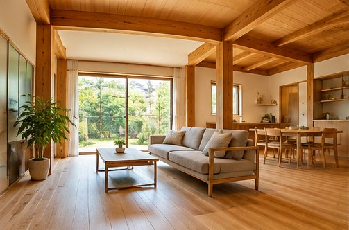
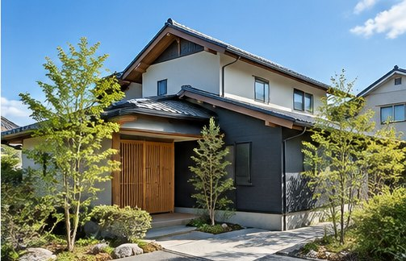
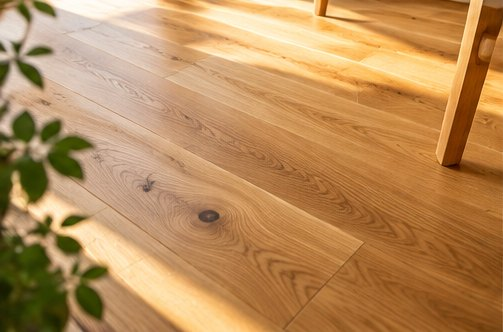
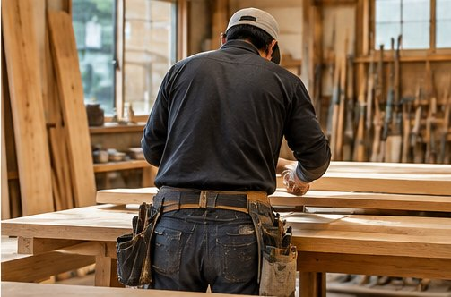

新築・木工事
住まいづくりのご相談、木工事・造作工事など。

家のことを、もっと気軽に。
新築からリフォーム、ちょっとした修繕まで。
一つひとつの住まいに、丁寧に向き合います。

「これって大工さんに頼めるのかな？」
そんな小さな疑問から、気軽に相談できる存在でありたい。
あらき建築は長崎を拠点に、住まいに関わる工事のご相談を承ります。工事の大小にかかわらず、まずはお話を聞かせてください。
お問い合わせはこちら →新築やリフォームから、暮らしの中の小さな困りごとまで。内容に応じてご相談を承ります。
住まいづくりのご相談、木工事・造作工事など。
床・壁・間取りの変更など、暮らしに合わせた住まいの改修。
建具や床まわりなど、気になる箇所のご相談もお気軽に。
住まいづくりから、暮らしに合わせたリフォームまで。木の表情や空間づくりをご覧ください。





新しい現場の様子や日々の仕事は、Instagramからお届けします。

住まいの工事は、つくる人との信頼関係から。ご希望やお困りごとを丁寧に伺い、暮らしに合った方法を一緒に考えます。
「こんなことも頼める？」という段階でも大丈夫です。
工事の内容や気になることを、お気軽にお問い合わせください。
ご相談・お見積もりについては、あらき建築までお気軽にお問い合わせください。